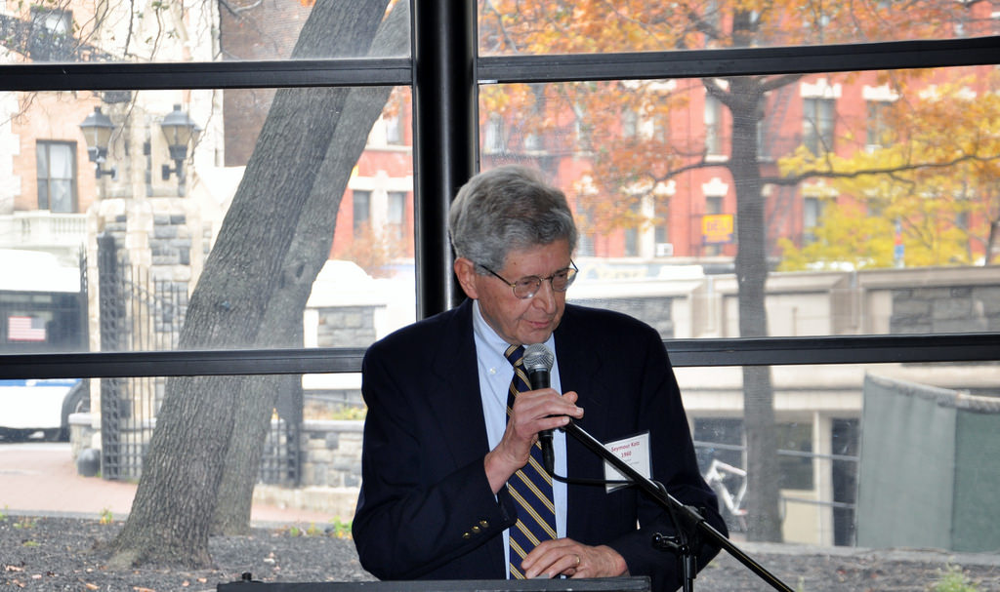

Dr. Seymour Katz, CCNY Class of 1960, Chairman of the Bronx Science / CCNY Scholarship Project
Many years ago,the City of New York offered to throw a parade in honor of Dr. Jonas Salk, the famed CCNY alumnus who created the polio vaccine. Upon hearing that it would cost millions in preparation and cleanup, Dr. Salk insisted that the money instead be given back to students. Dr. Seymour Katz, CCNY Class of 1960, was one of those students. It's one of the reasons he feels such a profound obligation to give back.
Dr. Seymour Katz, CCNY Class of 1960, Chairman of the Bronx Science/CCNY Scholarship Project.
Since its inception in 2005, the Bronx Science-CCNY Scholarship Project has opened doors to a wealth of opportunities for deserving students. As Project Chairman, Dr. Katz is pleased with its success. But he strongly believes in the importance of helping the next generation achieve their dreams, and as a Bronx Science-CCNY alumnus, he would like to reach higher. So every day he implores friends, acquaintances, patients and fellow alumni to really understand these students and their promise, and to give more generously.
We have an obligation to these kids. They are extremely responsible. “We have an obligation to these kids,” he states passionately. “They are extremely responsible. They take their scholarship money seriously. And they need this money. When you reach a level of achievement, you should remember that there are others in need. These students are extraordinary, they have potential. What they need is financial support.”
Dr. Seymour Katz, CCNY Class of 1960, Chairman of the Bronx Science / CCNY Scholarship Project
$30
$50
$100
$250